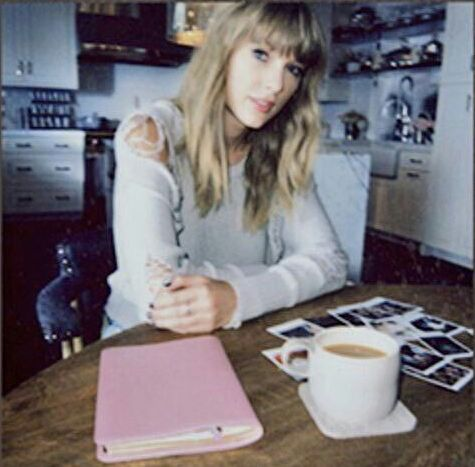

send:
to:
subject
me
you
what's 155 hours?
As I slid in my Airpods, Spotify’s notifications announced that the sound of The Weeknd’s voice singing Wasted Times had serenaded me for 155 hours. Contrary to its name, Wasted Times gave me a sense of determination of what to do with my time. It was a reminder to dedicate my efforts into meaningful experiences. The song gave me a purpose, and I carried this goal with me while working to the music’s tempo.
The longer I listened to the song, the more the lyrics resonated. The eloquence of The Weeknd’s voice mirrored mine as I publicly advocated for issues I care about deeply. The beat drop early on in the song represents my transition in identity early on in my life. The determination in his voice as he vowed to wait for his lover mirrored that of mine as I promised myself never to give up.
During those 155 hours, I inevitably encountered cycles of self-doubt. From photography to music production and trying out for the volleyball team to playing the violin, I explored my different interests or, as my mother would call it, “went through different phases.” Even after all the “exploration” I had done, I was uncertain of my attributes and talents. These are what people might consider to be “wasted times”, but ironically, they were unwasted. As I participated in World Scholar’s Cup competitions, I discovered my latent love of debate. As I performed with my vocal groups, I ascertained my passion for music and performance. The cold I withstood as the brisk Shanghai wind that blew against my coat while my frozen hands struggled to grasp my camera paid off as it helped me distinguish the artist living inside me. As I relaxed into the soft white pillows laid all over my bed to code and redesign Werner’s Nomenclature of Colors, I established my love for computer coding. However, not all 155 hours were so idyllic. The melancholic melody also reminds me of the consternation I experienced when I discovered the pain of departures, the desolation I felt when I underperformed in competitions, or the sharp pain in my eyes after hours of crying over my defeat in the badminton finals. These were the ups and downs; they were all a part of my experiences and therefore a part of me. I collected every piece, both good and bad, and learned to embrace them fully.
As I take off my Airpods and drop my bags onto the warm, wooden floor of my room, I begin to contemplate my future. While it may seem blurred, I can still scarcely see myself through the gloom. In the successive hours to come, a couch lined with soft white pillows will remain as my sanctuary to code and design more inventive and original projects with music playing in the background all the while.
These 155 hours embody my resilience and multitude of interests. Life is short; while we may periodically crossroads with uncertainty or lose our direction and it might seem like we’re “wasting time,” all of it ultimately leads to individual enlightenment.
Without a doubt, 155 hours will always represent who I was, who I am, and who I will be.
2017

under those lights.
placeholder
2017

i loved you when we were young
i love you. always have, always will.
2018

unbound
i still miss you from time to time
2018

nø løve
pov: middle school girl crying over the most average boy ever
2018

sänta
merry christmas, i miss you.
2018

streets.
driving around alone at 4 in the morning
2019

如醉如夢
"tryna find the one that can fix me"
2019
overplayed shit
"duffle bags full of drugs and a rocket"
2019

rhythm & blues
placeholder
2019

29.
good times.
2019

淚。
後來的我們什麼都有了 卻沒有了我們
2019 - 2021

bab(e)s
a group consisting of 3 talented ass bitches and a loser nicknamed boobie. these are the songs they sing when they pretend they're practicing but actually fucking around like crackheads. also my favorite part of high school ♡
2020

my 44th playlist
"if i could go back, i'd leave you alone"
2020

shanghai.
on repeat when i was in shanghai
2020

zenfanya
"maybe in another life"
2020

浮生若夢
you are not wrong who deem that my days have been a dream;
2020

summer 2020
midsummer madness
2020

tokyo.
when life was easier
2020

thank you, next
"this is a shoutout to my ex"
2020

i like her but it's a secret
i like my girls just like i like my honey
2020

醉生夢死
紅顏笑他把酒醉今朝 如夢初醒忘掉
2020

excuse me, i love you
you give me butterflies when you walk by <3
2021

the second star to the right
and wendy did believe, always
2021
alison
"you kept me like a secret but i kept you like an oath"
2021
drive safe
i made this playlist long so i don't have to pause to change songs because my mom gets mad at me when i do
2021 - present

155.hours
constantly on repeat for 155 hours
2021
drew
"sometimes the heart can see what's invisible to the eye"
2022
makkonen
"i think your girl think your girl fell in love w me she say my fuck and my tongue game a remedy"
2022
my playlist #68
我們不說破的關係 很微妙卻不是愛情
about 155 hours